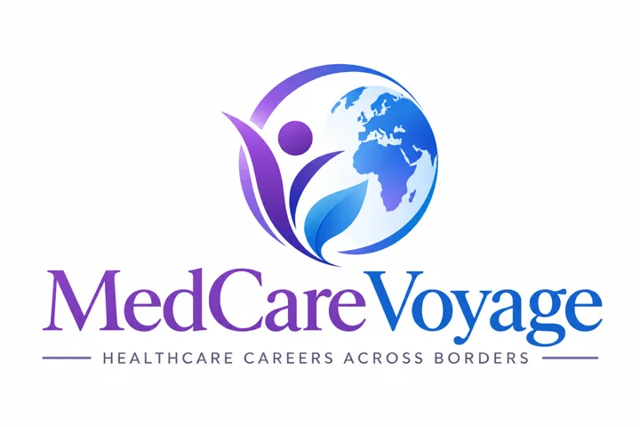

Work with purpose
Reflect on your strengths, interests and preferred care settings. Learn to research roles and assess your own career priorities.

Your skills.Career coaching for nurses, doctors, therapists and allied health professionals across Asia who are exploring Germany. Build your own path with a clear plan and independent guidance.
Bring your expertise.
Build your future.
Career planning · Language goals · Interview practice · Integration coaching
A healthcare career abroad starts with understanding your options—and yourself.
MedCare Voyage offers independent career counselling and professional development for healthcare professionals across Asia considering Germany. We help you organise your thinking, strengthen your preparation and make informed choices at your own pace.
You engage us for coaching, not placement. Your counselling fee is independent of whether you apply, receive an offer, start a job or stay in it.
Reflect on your strengths, interests and preferred care settings. Learn to research roles and assess your own career priorities.
Set goals for professional communication, language learning and understanding the qualification pathway relevant to your field.
Consider location, living costs, personal commitments and everyday life alongside professional goals. Make decisions with a fuller picture.
Personal career coaching for healthcare professionals
across Asia, shaped around your experience and goals.
Explore your career priorities, strengthen how you present your experience and prepare for your next professional step.
Explore consultations ↗Bring your questions and goals to an independent coaching conversation, with preparation tailored to your healthcare background.
Explore consultations ↗Illustrative AI-created portraits; not client testimonials or staff profiles.
Your coaching starts with your profession and your priorities—not a one-size-fits-all pathway.
Registered nurses, nursing graduates and experienced nursing professionals.
Professionals exploring their next career chapter and preparation goals.
Physiotherapists, occupational therapists and other rehabilitation professionals.
Laboratory, imaging, pharmacy and other healthcare backgrounds.
These are coaching audiences, not advertised vacancies or a statement of eligibility to practise in Germany. Each profession has its own requirements.
From your first conversation to ongoing professional confidence.
Choose a step to explore the coaching process and your takeaways.
You remain in charge. You contact employers, submit applications and make career decisions independently. Coaching supports your preparation; it does not include recruitment or representation.
Focused coaching for your preparation,
confidence and professional growth.
Set a realistic language-learning routine and professional communication goals. Explore ways to practise clinical vocabulary, patient conversations and interview answers.
Learn to present your experience in a CV and practise interview responses through mock sessions. You choose vacancies and send your own applications.
Learn how to find official information for your profession and build your own questions and document checklist. You or your authorised adviser handle applications.
Develop questions about duties, shifts, development opportunities and living costs. Use official sources and qualified advisers for legal, contract and visa decisions.
Optional sessions on workplace culture, communication, feedback and professional confidence after you independently secure employment. Fees remain independent of retention.
A move abroad is about more than a contract. We help you ask the right questions about the place you will call home.
You do not need every answer today. Start with a conversation about your profession, experience and goals, then choose the coaching you need. No commitment to a job search or relocation is required.
Contact us by email ↗Independent career coaching, tailored to your questions.
Your healthcare field, qualification and current professional stage.
Your experience, aspirations and preferred direction.
Current ability, certificates and time available to learn.
The skills or decisions you want to work on, and your budget.
Choose an individual conversation or learn together.
You pay for the consultation, independent of employment outcomes.
A personal conversation about your healthcare background, career goals and preparation priorities.
Return when you need another focused conversation, have new questions or want to review your progress.
A shared career-coaching conversation for a group of at least four healthcare professionals.
Personalised guidance for selecting the right job, CV editing and interview preparation. Tell us what support you need and request an individual quote.
Fees are for counselling and coaching only, with no hiring or retention success fees. Contact us by email to enquire about a consultation. An appointment is confirmed only after availability is agreed; online payment is not yet enabled.
Independent guidance.
Clear before you commit.
Initial consultation: €30 for 30 minutes. Follow-ups: €10 each. Group consultation: €15 per person for at least four people. Personalised career guidance, CV editing and interview preparation are quoted individually. Fees are independent of employment outcomes.
You choose your employers, courses, advisers and next steps. Coaching helps you ask better questions; it does not promise jobs, recognition, visas or departure dates.
We do not send CVs, match people to vacancies, arrange employer interviews, negotiate offers or represent hospitals. We receive no fees conditional on hiring or retention.
The initial consultation costs €30 and lasts 30 minutes. Each follow-up consultation costs €10. Group consultations cost €15 per person and require at least four participants. Personalised guidance for job selection, CV editing and interview preparation is charged according to your individual needs; request a quote before agreeing to the service. Fees are for the consultation or coaching delivered, independent of job applications, offers, hiring or retention. Courses, exams, translations, official applications and travel arranged separately have their own costs. Live booking and payment are not yet enabled.
Every professional’s situation is different.
These are the essentials to start with.
No. We welcome nurses, doctors, dentists, therapists and allied health professionals, including people at different career stages. The conversation is tailored to your field. It does not establish that your qualification is eligible for a particular role or licence in Germany.
No. We provide independent career counselling and coaching. We do not match you to vacancies, forward CVs, arrange employer interviews, negotiate offers or represent employers. You research opportunities, contact employers and submit applications yourself.
Find a career direction that fits you.
Our personalised career counselling helps you explore job roles that suit your qualifications, experience, interests and goals. By reviewing your CV and understanding your strengths, we help you identify suitable opportunities and plan your next steps with confidence.
Choose the support you need:
You pay for our coaching time and guidance. Payment is independent of job applications, offers, hiring decisions or continued employment.
Yes. Coaching can cover how to structure your CV, explain your experience and practise interview answers. Mock interviews are learning sessions; they are not interviews with employers. You prepare and send your own applications.
No. You can begin by exploring your goals and building a language-learning plan. Required levels, accepted certificates and professional language examinations depend on your profession and pathway. Confirm these with the relevant authority; no single language level is presented as suitable for every healthcare role.
No. We explain how to find official information and help you identify questions and preparation priorities. You or an appropriately authorised adviser handle applications and legal advice. Authorities decide recognition, licensing and immigration outcomes.
Optional sessions on professional communication, workplace culture, feedback, adapting to a new team and your longer-term development goals. You engage us independently. We do not manage your employment or charge according to how long you remain in a job.
No. Coaching is educational professional support, not a job offer, eligibility assessment, placement or guarantee of an official decision. You decide which actions to take and can seek specialist advice where needed.
A group consultation requires at least four participants and costs €15 per person. For example, four participants pay €60 in total. Each participant’s fee is for the group consultation, independent of employment outcomes.
Use the email contact option to enquire about your preferred consultation and availability once the contact email is published. Emailing does not automatically confirm an appointment. Online payments are not yet enabled, and no payment is collected through this website.
Let’s turn your questions into a practical plan.
Contact us by email ↗To request a personalised quote, describe the job-selection guidance, CV editing or interview preparation you need. Tell us your healthcare profession, the consultation you are interested in and your preferred times. For a group consultation, include the number of participants.
Use official sources to confirm the current requirements for your profession. Coaching is educational and does not replace individual immigration, legal or professional licensing advice. Independent service concept; no official affiliation.